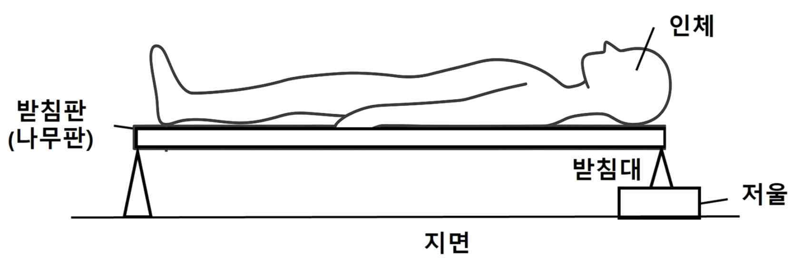

문제 1
아래 그림은 인체의 무게중심 위치를 구하기 위한 실험을 보여준다. 두 받침대에 나무판을 올려놓고 한쪽 받침대 밑에는 저울이 있다. 그 후 사람이 나무판 위에 눕는다. 나무판의 길이와 인체의 키는 d로 같다.
[가정]
1. 나무판은 균일한 물질 구성
2. 높낮이에 따른 중력의 변화는 무시 가능
3. 인체의 두께와 나무판의 두께는 길이에 비해 매우 얇아 사람과 나무판이 동일 평면상에 있음
4. 폭과 저울의 높낮이 변화에 대한 것은 무시
5. 사람과 나무판은 모두 지면에 평평하며, 저울 위 받침대의 질량 또한 사람, 나무판에 비해 무시할 수 있는 정도로 작음

[문항]
[2-i] 나무판의 질량은 m이고 중력가속도는 g이다. 저울에 측정된 무게는 W이고 사람의 체중은 B라 할 때 발끝으로부터 인체 무게중심 위치 x를 구하고 그 근거를 논하시오.
[2-ii] 좌측 받침대가 나무판에 가하는 힘의 크기를 구하고 그 근거를 논하시오.